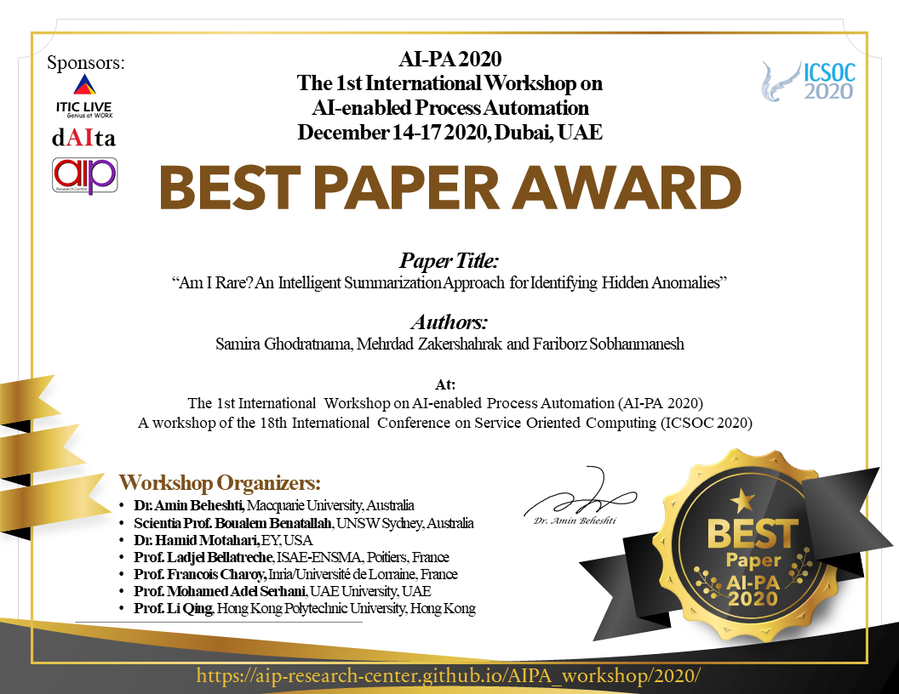
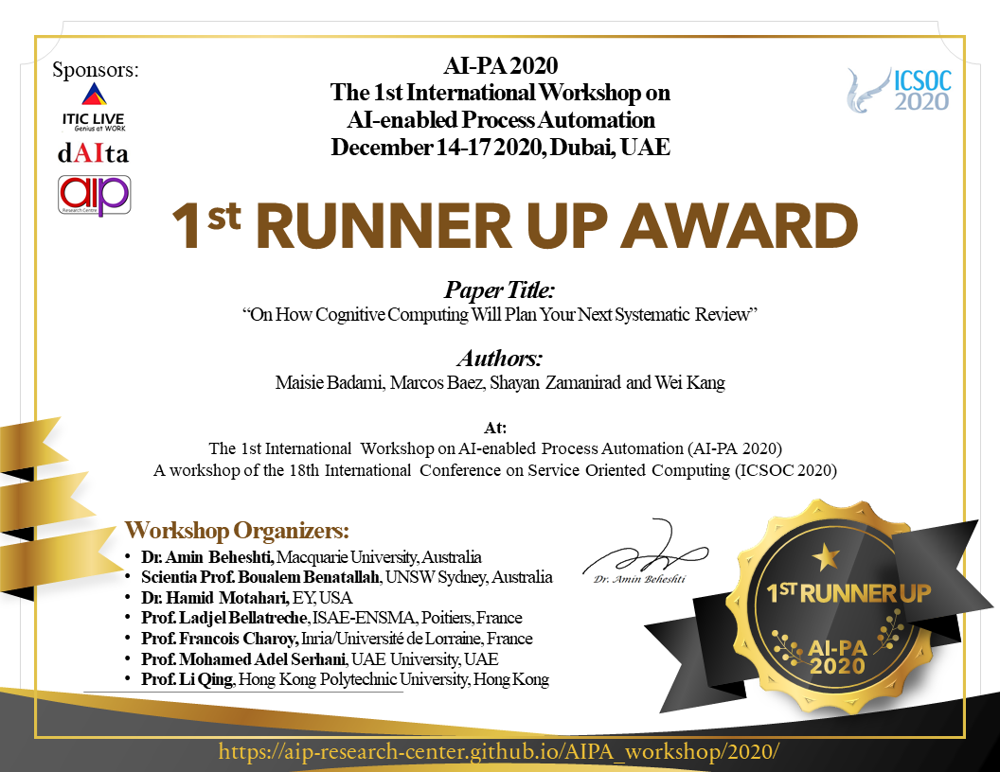

AI-PA 2020
The 1st International Workshop on
AI-enabled Process Automation
December 14-17 2020, ICSOC, Dubai, UAE
Welcome
Business processes are central to the operation of public and private enterprises. Today, the advancement in Service Oriented Computing, Artificial Intelligence (AI) and Data Science has the potential to transform business processes in fundamental ways; by assisting knowledge workers in communicating analysis findings, supporting pieces of evidence and to make decisions.
The 1st International Workshop on AI-enabled Process Automation (AI-PA) will be held as one of the workshops of the 18th International Conference on Service Oriented Computing (ICSOC 2020). The AI-PA workshop aims at providing a forum for researchers and professionals interested in Artificial Intelligence (AI) enabled Business Processes and Services; and in understanding, envisioning and discussing the opportunities and challenges of intelligent Process Automation, Process Data Analytics and providing Cognitive Assistants for knowledge workers. Recognizing the broad scope of the potential areas of interest, the workshop is organized into FOUR themes, as follows:
Call For Papers
Theme 1: Artificial Intelligence (AI), Services and Processes
- Intelligent Knowledge Lakes
- Machine Learning, Deep Learning, Natural Language Processing
- Intelligent Knowledge Representation
- Intelligent user experience
- Intelligent Crowdsourcing
- Cognitive Processes
Theme 2: BigData, Services and Processes
- Process Data Lakes and Knowledge Lakes
- Process Data Science
- Data-Driven Processes
- Knowledge-Intensive Processes
- Process Data Engineering
- Process Data Organizations
- Process Data Curation
- Process Data Mining
- Process Data Analytics
- Process Data Visualization
- Process Data Summarization
- Storytelling with Process Data
Theme 3: Smart Entities, Services and Processes
- Internet of Things (IoT)
- Sensor Technology and Data Analytics
- Machine-to-Machine and Human-to-Machine Communication
- Advanced Automation and Robotics (including collaborative robots)
Theme 4: Industry Applications
- Industry 4.0
- Services in Organizations and Governments
- Knowledge workers: Cognitive Assistance and Analytics
- Customer Journey and KYC (Know Your Customer)
- Intelligent Recommender systems
- AI-enabled applications, such as:
- AI-enabled Banking
- AI-enabled Policing
- AI-enabled Education
- AI-enabled Health
Paper Submission Instructions
-
Position papers: 8-page limit, describing a position statement on issues related to the topics of the workshop. Position papers would lead to interesting discussions by raising key questions, controversial points of view, challenges, and ideas to address the identified issues.
-
Research papers: 15-page limit, describing original and novel research work, including research results and evaluations. The papers may present the ongoing research, novel ideas with preliminary results, advances of the state of the art, analysis of the current results in the state of the art or state of the practice, or experience in implementing the theories.
-
Industry Papers: 15-page limit, This track will be an opportunity for people associated with industry and academia to present their novel ideas while attracting funding and/or further expand collaborations. An important criterion for papers to be submitted to the Industry Track is a clear industrial association, either in the form of an extensive evaluation of research results in industrial use cases or active participation of industry representatives as co-authors.
-
Papers should be formatted according to Springer’s LNCS Formatting Guidelines. Submissions must be in English and must not exceed the above mentioned limit pages (including abstract, figures and references). Each paper must be submitted on or before the provided deadlines. The final submission should be formatted according to Springer’s LNCS Camera ready instructions. Each paper will be reviewed by at least three reviewers.
-
All papers must be submitted electronically, as PDF file, to the Workshop Submission System: https://easychair.org/conferences/?conf=aipa2020
Important Dates
- Paper Abstract Deadline:
August 24, 2020 October 26, 2020
- Paper Submission Deadline:
August 31, 2020 October 31, 2020 (Firm and Final!)
- Paper Notification Deadline:
November 15, 2020 November 25, 2020
- Camera-ready (and Early Registration) Deadline: November 30, 2020
- Workshop: December 14-17
Notice: Considering the current COVID situation and uncertainty, ICSOC 2020 and the AI-PA Workshop will happen online (Details TBA).
Award and Support Program
- Best Paper Award: $500AUD
- Workshop Registration Fee Waiver: We will waive the Workshop Registration Fee for all accepted papers, thanks to our sponsors.


Workshop Program
Workshop Organizers
- Dr. Amin Beheshti, Macquarie University, Australia
- Scientia Prof. Boualem Benatallah, UNSW Sydney, Australia
- Prof. Ladjel Bellatreche, ISAE-ENSMA, Poitiers, France
- Prof. Francois Charoy, Inria/Université de Lorraine, France
- Dr. Hamid Motahari, EY, USA
- Prof. Mohamed Adel Serhani, UAE University, UAE
- Prof. Li Qing, Hong Kong Polytechnic University, Hong Kong
Program Committee
Schahram Dustdar, Vienna University of Technology, Austria
Fabio Casati, Servicenow, USA
Aditya Ghose, University of Wollongong, Australia
Ramana Reddy, West Virginia University, USA
Anup Kalia, IBM Research, USA
Michael Sheng, Macquarie University, Australia
Mark Burgin, University of California, Los Angeles, USA
Farouk Toumani, Blaise Pascal University, France
Hakim Hacid, Zayed University, UAE
Gordana Dodig Crnkovic, Chalmers University of Technology,Sweden
Mehdi Elahi, University of Bergen, Norway
Daniela Grigori, University Paris-Dauphine, France
Enayat Rajabi, Dalhousie University, Canada
Sajib Mistry, Curtin University, Australia
Fabrizio Messina, University of Catania, Italy
Qiang Qu, Shenzhen Institutes of Advanced Technology, China
Azadeh Ghari Neiat, Deakin University, Australia
Rama Akkiraju, IBM Watson, USA
Shayan Zamanirad, UNSW Sydney, Australia
Marcos Baez, University of Trento, Italy
Fariborz Sobhanmanesh, Macqaurie University, Australia
Adrian Mos, NAVER LABS Europe, France
|